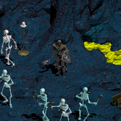
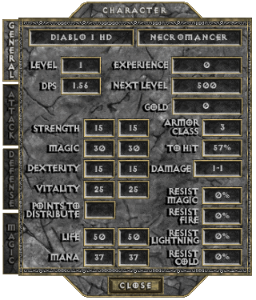
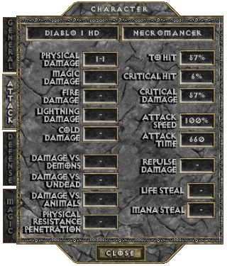
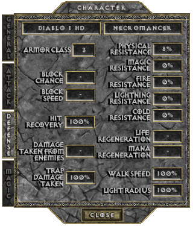
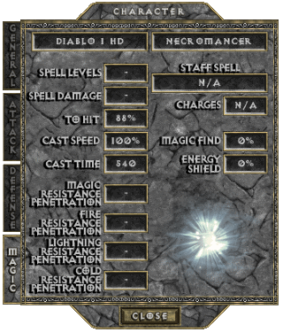
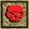
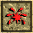

THE NECROMANCER
From the steamy recesses of the southern swamps comes a figure cloaked in mystery. The Necromancer, as his name implies, is an unseemly form of Sorcerer whose spells deal with the raising of the dead and the summoning and control of various creatures for his purposes. Though his goals are often aligned with those of the forces of Light, some do not think that these ends can justify his foul means. Long hours of study in dank mausolea have made his skin ashen and corpse-like, and his figure is skeletal. Most people shun him for his peculiar looks and ways, but none doubt the power of the Necromancer, for it is the stuff of nightmares.
They are Priests of the cult of Rathma that hail from the far Eastern jungle. They live in a vast underground city in these jungles where they can pursue their arcane magic. Through the teaching of Rathma and years of research, they understand and hold sacred the delicate balance of life and death and protect it with their life. Their desire to uphold this balance has brought the Necromancers forth from the isolation of their remote, dank homeland to destroy Diablo.
Their culture has subsisted in the shadow of the great mage clans from the earliest days, and in most ways their practice reaches back to a time before magic was formalized into strict disciplines. Necromancers have the ability to reanimate corpses of most entities and to control the recently dead, and can focus these energies, giving them manifestation in the corporal world.

BASE STATS
Per character level: 5 Attribute Points +2 Life +2 Mana +3% To Hit (Spell)
+0.15 Physical Damage (only at levels 8 to 60, levels 1 to 7 make up 1-1 innate damage)
-0.2% Critical Hit Chance (only at levels 1 to 5, after 5 it stops decreasing)
-0.5% Critical Hit Damage (only at levels 1 to 15, after 15 it stops decreasing)
Physical Resistance drops from 8% to 2% at level 2, to 0% at level 3
Per point in Strength: +0.18 Physical Damage +0.5% Critical Hit Damage (min 37 points)
Per point in Dexterity: +0.18 Physical Damage +0.125% Critical Hit Chance (min 57 points) +0.5% To Hit (Weapon) +0.2 Armor Class
Per point in Vitality: +1 Life (hardpoints) +1.5 Life (softpoints)
Per point in Magic: +1 Mana (hardpoints) +1.5 Mana (softpoints) +0.5% To Hit (Spell)
   
PREFERRED WEAPONS
text
See THIS PAGE for more information about the Attack Speed of ???.
SKILLS
| Name | Icon | Info |
|---|---|---|
| RAISE ZOMBIE (available from start) | Effect: Support skill that uses a humanoid, beast or demon corpse to reanimate a zombie, but it won't follow you Number of Zombies: 1 (+1 per 3 Character Levels from level 4) Zombie's Health: 25 (+5 per 3 Character Levels from level 4) Zombie's Armor Class: 10 (+8 per 3 Character Levels from level 4) Zombie's Physical Damage: 1-4 (+1-2 per 3 Character Levels from level 4) Zombie's Chance to Hit: 32% (+8 per 3 Character Levels from level 4) Zombie's Lifespan: 16 sec (+2 per 3 Character Levels from level 4) Cost: 5.5 Life (+0.1(6) per Character Level from level 4, displays as rounded up to 1 decimal) Synergy: Vitality: Zombie's Health: +1 (Normal) +2 (Nightmare) +4 (Hell) +??? (Torment) Difficulty: Zombie's Health: x2 +100 (Nightmare) x2 +450 (Hell) ??? (Torment) Zombie's Armor Class: +60 (Nightmare) +110 (Hell) +??? (Torment) Zombie's Physical Damage: x2 +6-14 (Nightmare) x2 +29-60 (Hell) x? +??-?? (Torment) Zombie's Chance to Hit: +100% (Nightmare) +200% (Hell) +???% (Torment) | |
| RAISE SKELETON (from Character Level 8) |  | Effect: Support skill that summons a skeleton who will follow and protect you everywhere you go Number of Skeletons: 1 (+1 per 2.5 Character Levels from level 11) Skeleton's Health: 25 (+5 per 2.5 Character Levels from level 11) Skeleton's Armor Class: 26 (+8 per 2.5 Character Levels from level 11) Skeleton's Physical Damage: 4-8 (+1-2 per 2.5 Character Levels from level 11) Skeleton's Chance to Hit: 56% (+10 per 2.5 Character Levels from level 11) Cost: 9.4 Life (+0.2 per Character Level from level 11) Cooldown: 1 sec Synergy: Vitality: Skeleton's Health: +1 (Normal) +2 (Nightmare) +4 (Hell) +??? (Torment) Difficulty: Skeleton's Health: x2 +50 (Nightmare) x2 +300 (Hell) ??? (Torment) Skeleton's Armor Class: +80 (Nightmare) +150 (Hell) +??? (Torment) Skeleton's Physical Damage: x2 +18-42 (Nightmare) x2 +68-136 (Hell) x? +??-??? (Torment) Skeleton's Chance to Hit: +100% (Nightmare) +200% (Hell) +???% (Torment) |
| CORPSE EXPLOSION (from Character Level 16) |  | Effect: Offensive skill that uses any monster's corpse to expel the leftover dead energy in a 9 square violent burst Physical Damage: 40-60% of corpse's max life (+2.5% from Character Level 19, displays as rounded down) Blockable Effect Cost: 14 Life (+0.5 from Character Level 19) |
| REVIVE (from Character Level 24) | Effect: Support skill that uses any monster's corpse to reanimate monster and enrage it, but it won't follow you Number of Revivals: 1 (+1 per 2 Character Levels from level 26) Revived's Damage: +0% (+10% per Character Level from level 27) Revived's Hit Chance: +25% (+5% per Character Level from level 27) Revived's Lifespan: 30 sec (+1.5 per Character Level from level 27) Cost: 25 Life (+1 per Character Level from level 27) | |
| BLOOD RITUAL (from Character Level 32) | Effect: Offensive buff that boosts life and with which spells will use up life instead of mana for 30 min Life: +25% (+2.5% per Character Level from level 34, displays as rounded down) Halves the cost of Blood Spells Cost: 10% Life | |